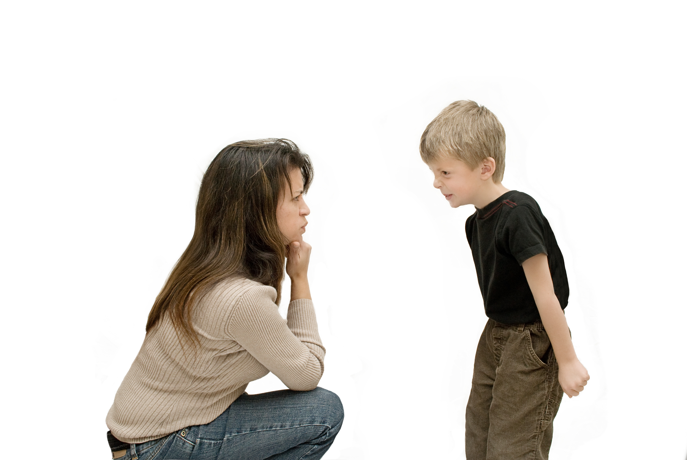

Be Persistent and Patient
Friendships with children with autism may take more time to develop, but your patience and persistence will pay off. Building trust and understanding is key to a lasting and meaningful friendship.
- Understand that it may take longer for your friend to open up. Don't be discouraged if they don't respond immediately.
- Continue to reach out and show that you care. Consistent efforts can help build trust and security.
- Be patient with communication. Allow your friend the time they need to express themselves.
- Celebrate small victories and progress. Every step forward in your friendship is meaningful.
